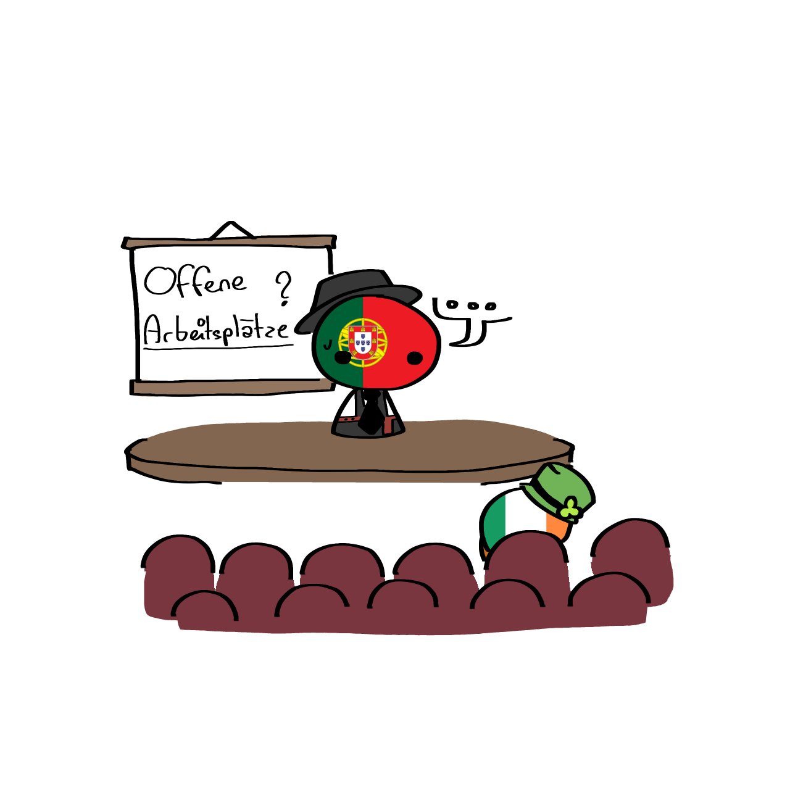

Auch wenn die EU viele Ziele für die Digitalisierung der Mitgliedstaaten hat, sind diese nicht leicht, direkt umzusetzen, da sie mit Herausforderungen kommen, welche den gesamten Prozess verzögern und nur langsam angegangen werden können. Zu diesen zählen:
Die digitale Souveränität
- Die EU ist stark von Anbietern aus USA und Asien abhängig, arbeitet jedoch langsam an der entwicklung von eigenen Infrastrukturen (z.B. Gaia-X)
Wirtschaftlicher Rückstand von KMU
- Kleine und Mittlere Unternehmen erreichen oft nicht das von der EU für 2030 festgelegte Digitalisierungsziel. Dies liegt an fehlenden Finanzen und Kenntnissen, weshalb es zu Verzögerungen der Umsetzung des digitalen Umbaus von Unternehmen kommt
Fachkräftemangel von IT-Experten
- In der EU gibt es nicht ausreichend genügende IT-Spezialisten, KI-Experten und Datenanalysten, was den Erhalt von Wettbewerb erschwert und das Vorantreiben eigener Transformation verzögert

Fragmentierung des digitalen Binnenmarktes
- trotz Bemühungen für einen solchen Binnenmarkt bleibt dieser aufgrund von verschiedenen nationalen Gesetzen, Steuersystemen, bürokratischen Problemen sowie differierenden Standards fragmentiert, was europäischen Start-ups die Konkurrenz mit US-amerikanischen und asiatischen Firmen verkompliziert